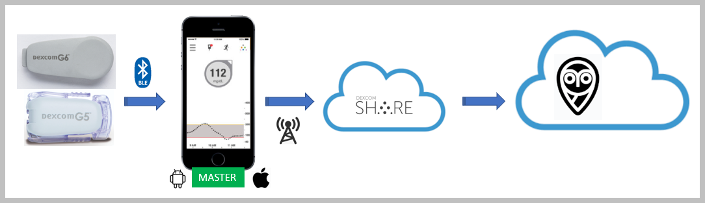
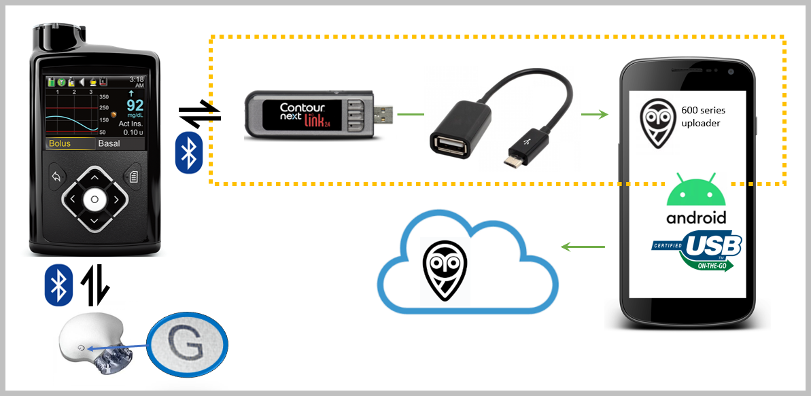
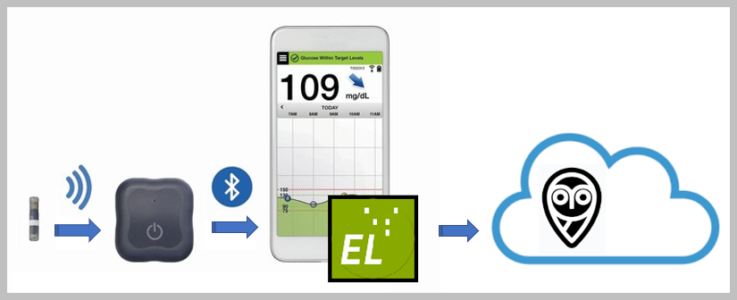

Supported Uploaders
An Uploader is a mechanism or system for uploading the CGM data from your sensor to your Nightscout site. This can be either an electronic solution (usually for older devices), a simple app installed on your phone (for most newer systems) that connects to the sensor/pump and then uploads this data but also another app in the cloud acting as a “bridge” and mirroring data to Nightscout.
The type of Uploader needed will depend on the type of CGM system being used. In this page, we will break the different systems down by manufacturer, then further by sensor type.
Once you are clear about the type of sensor and upload system you will be using, you can find detailed configuration information for each one here.
If you’re developing an uploader, you’ll find the API information in your own Nightscout site at /api-docs and /api3-docs.
DIY Closed loop Systems
Only your loop app should upload BG to Nightscout.
See this dedicated page for setup links.
Dexcom
Dexcom G5/G6/ONE/G7
{kind=link}
If you are using the Dexcom sensor (except ONE) connected to the Dexcom app on your phone, it will upload directly to the Dexcom servers (also still known as “Dexcom Share”) and you won’t need to use any extra uploader or master device.
Note
Dexcom Share is not available with Dexcom ONE. Use xDrip+ or xDrip4iOS.
For this to work, Nightscout must be configured to use the bridge plug-in and will then automatically pull the CGM information directly from the Dexcom servers in real-time.
Note
If you use a DIY closed loop system it is recommended that you let it upload to Nightscout instead of importing data using Dexcom Share and the bridge plugin.
Please note that at this time (end 2023), the Dexcom G5 system is effectively obsolete but some people are still using stocks of old sensors and transmitters.
If you don’t want to use the official Dexcom apps, you can use open-source software apps for your Dexcom sensor to connect, display, alarm and also upload to Nightscout:
Android: xDrip+ for G5, G6, ONE and G7.
iOS:
Spike for G5 and older G6 transmitters (not Firefly)
xDrip4iOS for G5, G6 and ONE transmitters
{kind=link}
Dexcom “Firefly” Transmitters
Most of the useable transmitters that fall into this category at the present time are generally rebatteried or rechargeable/modified transmitters.
Medtronic
If your sensor system is able to directly upload to CareLink then Nightscout might be able to get the information directly from the cloud using the mmconnect (deprecated) plugin. Unfortunately, this is not possible anymore with recent pumps (7xx series and above).
{kind=link}
If this isn’t an option and your sensor/transmitter is connected to your pump (Medtronic 600 series pumps), then you’ll need an Android phone connected with an OTG cable to your pump’s connected glucose meter. The phone will need to run the 600 Series Uploader app.
{kind=link}
Glucomen Day
You can forward your data from GlucoLog Web using an AWS bridge documented here.
Tandem t:slim X2
You can synchronize your treatments one way from your Tandem Diabetes t:connect web/mobile application to Nightscout using a bridge app running via Pipenv or Docker as documented here.
Abbott Freestyle Libre
Libre 1
Non Bluetooth-enabled Freestyle Libre sensors will need an additional transmitter device fixed on top of the sensor to send readings to the uploader device. In release order here are some transmitter options: LimiTTer, BlueReader, Blucon, MiaoMiao, Bubble, Droplet and Atom.
Transmitter Compatibility
The Libre environment is complex and evolves quickly. Before buying a transmitter, please join the respective Facebook groups and make sure that the transmitter you are planning to buy is compatible with your sensor type.
Most of the transmitters have their own proprietary apps. Nearly all of these support the uploading of data to Nightscout (LinkBluCon, Tomato, Diabox, eDroplet, …). Again, check the transmitter manufacturer’s website and the relevant Facebook support groups for information.
Open-source apps such as xDrip+, Juggluco, Spike and xDrip4iOS also support some of the above transmitter devices.
Libre 2
You can connect to the Libre 2 sensor (EU only) without an additional transmitter using xDrip+, and xDrip4iOS.
Other Libre 2 sensors can be used directly with Juggluco and Diabox.
Libre 2/3
You can use the sensor connected with Juggluco or upload to Nightscout automatically from LibreView servers deploying this project, or use xDrip+ to perform this operation.
A new plugin in Nightscout 15 (under development) will integrate the project above.
Eversense
In order to get data from the Eversense CGM system, you will need to use the ESEL app running on an Android phone with the modified vendor app.
{kind=link}
Diasend
disaend-nightscout-bridge synchronizes treatments (insulin boli, temp basal changes) as well as continuous glucose values (CGV) from Diasend to Nightscout. This can help CamAPS FX users to view their treatments and glucose values via Nightscout. A 30 minutes delay might occur.
A new plugin in Nightscout 15 (under development) will integrate the project above.